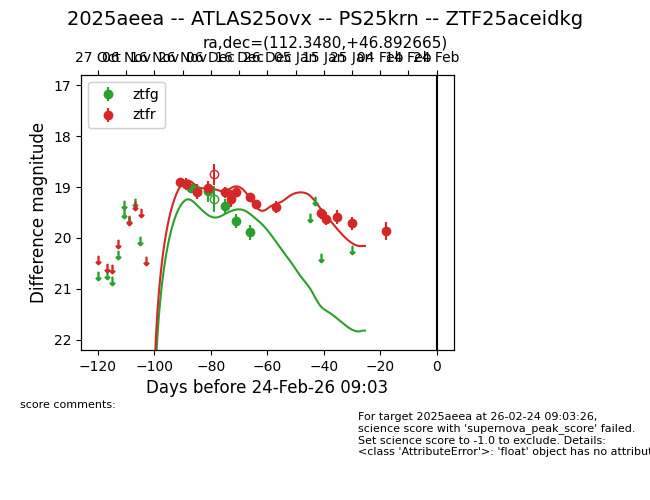
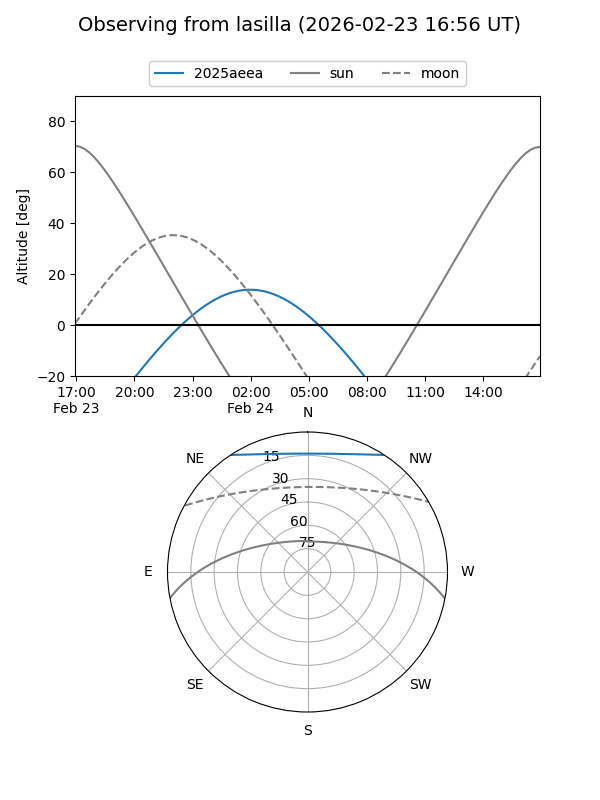
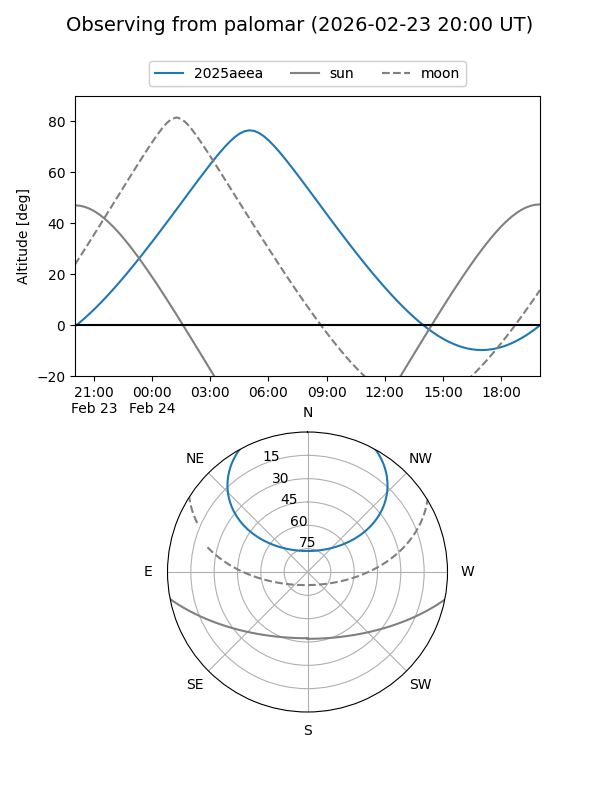

2025aeea
Target 2025aeea at 2025-12-31 17:00
Aliases and brokers:
FINK:
Lasair:
ALeRCE:
TNS:
YSE:
alt names
ZTF25aceidkg (ztf,fink_ztf)
2025aeea (tns,yse)
ATLAS25ovx (atlas)
PS25krn (panstarrs)
Coordinates:
equatorial (ra, dec) = 112.3480,+46.89266
equatorial (HMS+DMS) = 07:29:23.51,+46:53:33.59
galactic (l, b) = (171.3334,+25.66839)
Flags:
Photometry:
last ztfg=19.89, ztfr=19.39
6 ztfg, 10 ztfr detections
Lightcurve

Visibility


Additional plots